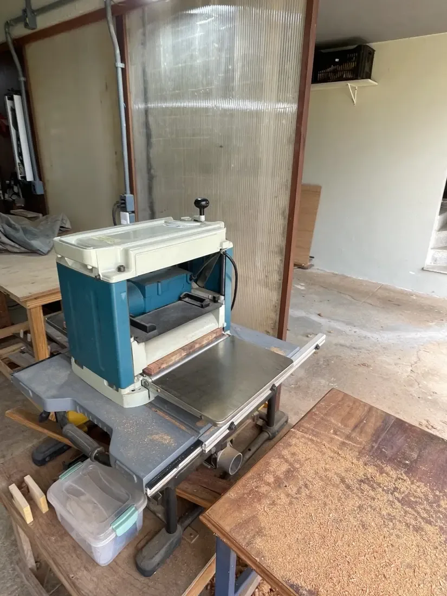
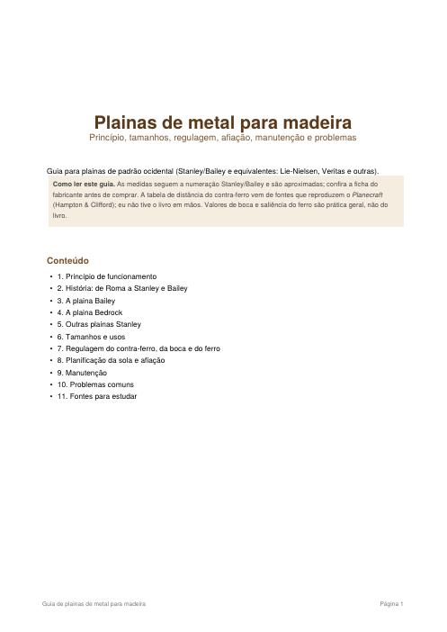

O prazer de aprender, criar e compartilhar.
Guias, ferramentas, projetos e técnicas de marcenaria em português. Um caderno de bancada onde a madeira e o aço encontram a precisão e a dedicação.
Serra dos Órgãos e o Dedo de Deus, a paisagem da Serra Fluminense.
Um caderno aberto de marcenaria
Já procurou como afiar um formão, regular uma plaina ou escolher a lixa certa e só encontrou respostas em inglês, dispersas em vídeos soltos? Pois o melhor da marcenaria repousa em livros, manuais e revistas de outros idiomas.
Para devolver à bancada o tempo gasto garimpando a internet, criei o Serras & Formas, uma biblioteca de guias práticos, projetos, estudos de ferramentas e traduções comentadas, escritos em português e sempre com as fontes.
Sou um entusiasta, com uma pequena oficina na serra de Petrópolis, entre o perfume do cedro e o chiado da plaina. Não sou profissional… mas anoto, com todo o rigor, o que aprendo, para que a sua próxima peça saia melhor.
Publicados recentemente

The Smile: a mesa que sorri, de Johannes Andersen
Uma fenda no tampo que sobe nas pontas como um sorriso, e que é também uma prateleira: a mesa Smile, desenhada por Johannes Andersen por volta de 1957 e produzida pela CFC Silkeborg, um ícone bem-humorado do modernismo dinamarquês.

Móveis dinamarqueses vintage: o garimpo e a restauração da Lanoba Design
Café em cada casa, contêineres cheios de teca e uma mesa que sorri: Lars Noah Balderskilde e David Singh contam como levam a mobília dinamarquesa de meados do século XX das casas da Dinamarca a um galpão em Nova Jersey.

create: André Göbel e a madeira curvada no vapor
Do banco de nogueira e freixo curvado no vapor à cadeira Panton feita de 532 pedaços de lenha: o canal alemão create, de André Göbel, tem poucos vídeos e nenhum projeto repetido.

Cuidados de A a Z ao fabricar seus móveis, de acordo com a Oficina Domum
Aclimatação, cola certa no clima certo, encaixes, secagem, madeira de demolição longe da cozinha, óleos, verniz e tempo: os cuidados que a Oficina Domum, de Curitiba, leva em conta em cada móvel de madeira maciça, organizados de A a Z.
Comece pela oficina

Quer montar sua oficina e não sabe por onde começar?
Uma garagem de 6,40 × 2,70 m serve de estudo de caso para discutir layout, circulação, posição das máquinas, bancada, iluminação, energia, armazenamento e controle de pó. Não é um modelo a copiar: é um ponto de partida para pensar no seu espaço.
Ler o guia completo →
Plainas de metal: princípio, história, regulagem e manutenção
Uma cunha de aço e uma sola plana. O guia das plainas Stanley/Bailey: como cortam, de onde vem a numeração, Bailey contra Bedrock, tamanhos, contra-ferro, boca, afiação e os problemas mais comuns.
Ler o guia completo →
Regulagem da serra de fita, do volante às guias
Na ordem certa, a serra corta onde o lápis mandou. Alinhar a lâmina, tensionar, ajustar as guias e esquadrejar a mesa, e por que quase toda deriva nasce de uma regulagem feita fora de sequência.
Ler o guia completo →
O graminho: tipos, como usar, como escolher e quatro exercícios
Régua e lápis medem; o graminho repete. Pino, faca, roda, lápis e duplo; madeira ou metal; o que separa um bom graminho de um ruim, o micro ajuste da Veritas, três canais para fazer o seu e quatro exercícios.
Ler o guia completo →
Cinco exercícios para aprender a usar a plaina
Aprender a sentir o que a lâmina faz. Da apara contínua ao aplainar até a linha: cinco práticas em ordem, com o que cada uma treina, como conferir o resultado e o sinal de que a etapa está dominada.
Ler o guia completo →
Afiação de formões e plainas pelo método do Morito
Contra o excesso de métodos, uma escola só. Costas primeiro, bisel a 30° e um microbisel um grau acima: a afiação de origem japonesa ensinada por Morito Ebine, com as pedras, os ângulos e a ordem certa.
Ler o guia completo →
Espiga e furo: o encaixe que sustenta a marcenaria
O encaixe que sustenta, em silêncio, a maior parte dos móveis. Proporções clássicas, a ordem de execução, por que o furo vem antes da espiga e o ajuste a seco, com uma nota sobre o sashimono japonês.
Ler o guia completo →
Como escolher e armazenar madeira
A madeira nunca deixa de conversar com o ar. Umidade de equilíbrio, retração, empenos, o que olhar na madeireira e como empilhar o estoque em casa, para que a tábua escolhida não traia o projeto depois de pronto.
Ler o guia completo →Explore por assunto
Na bancada
Afiação4
Pedras, ângulos e métodos para um fio que entra na fibra sem esforço.
Ferramentas manuais7
Uma a uma: anatomia, escolha, uso e cuidado de cada ferramenta.
Máquinas4
Regulagem, manutenção e segurança das máquinas estacionárias.
Técnicas e encaixes4
Espiga e furo, rabo de andorinha, sashimono e outras uniões.
Madeiras3
Espécies brasileiras e estrangeiras, com nome científico, secagem e madeira de demolição.
Acabamento4
Lixas, óleos, ceras e vernizes: quando a madeira revela o seu desenho.
Oficina3
Bancadas, gabaritos, acessórios e máquinas feitas em casa.
Projetos3
Peças construídas e projetos em andamento, com medidas.
Para ler e aprender
Traduções1
Artigos clássicos e atuais vertidos do inglês para o português.
Formação8
Escolas e cursos presenciais, no Brasil e no exterior: onde ir para ter aula.
História8
A origem das ferramentas, dos fabricantes e dos ofícios: séculos de bancada.
Glossário1
Vocabulário da marcenaria em português e inglês.
Mestres e leituras11
Perfis de marceneiros, autores e canais, e resenhas de livros.
Referências67
Canais do YouTube, sites e cursos online, livros, revistas e lojas do mundo todo.
Escolas e cursos
Nenhum livro, nenhum vídeo substitui a mão de um mestre corrigindo a sua. Minha recomendação mais importante para quem começa: procure aulas práticas com orientação de profissionais. Reuni 14 escolas e mestres no Brasil, separados por estado, com uma resenha de cada um.
Clique aqui para conhecer as escolas →
No exterior: escolas nos Estados Unidos, no Canadá, na Inglaterra e Escócia, na França, na Espanha e pelo mundo. Prefere aprender online? Canais, sites e livros →
Segurança em primeiro lugar
A lâmina que corta a madeira não distingue a fibra do dedo. Ferramentas afiadas, máquinas de alta rotação e a poeira fina pedem respeito.
Este site reúne estudos e experiência pessoal: não substitui cursos presenciais, manuais dos fabricantes nem a orientação de profissionais. Cada leitor responde pelos riscos que assume.
Antes de ligar uma máquina, faça um curso, conheça cada equipamento e use a proteção adequada. A segurança também é parte da arte.